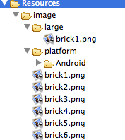

This manual describes how your application resources (such as image, audio, and binary files) are handled by MoSync in C/C++, describes the format and lists that can be used to organize your resource files, and the command switches for the resource compiler.
The MoSync Resource Compiler provides a way to manage applications resources for C/C++ applications. If you are working in HTML5/JavaScript, those resources should be handled in the normal HTML way: store them in the /LocalFiles folder, load them using e.g. <img> tags, use conditions to call the appropriate resource file, and so on. See Developing Apps in HTML5 and JavaScript.
Using its Resource Compiler, MoSync can handle application resources for C/C++ apps in several different ways:
Resources are files that are external to your main application code. They are compiled separately from your code during the build process into a binary file which is put into the package ready to be delivered to the target platforms. As well as the compiled binary file, the resource compiler creates the header file MAheaders.h which needs to be included in your application program through the preprocessor directive:
#include <MAHeaders.h>
This header file contains the #defines that symbolically link your application to its resources.
Resources can include:
For more information about resources and how to create them, see the programming guide Compiling Resources. We also have a general tutorial, Adding Resources to a Project, which demonstrates how to make resources available to your applications and discusses many importants aspects of resource handling.
One important aspect is to be able to select what resource to load depending on which environment the app runs in—such as the platform (e.g. “Android” or “iOS”) the app is built for, or the screen size of the device that the app runs on. These are called variant resources (variant resources are supported in the MoSync SDK 3.0 onwards).
The resource compiler is part of the MoSync Pipe-Tool. It is automatically invoked during the build process, so there is usually nothing you need to do to use it.
You can, however, run the resource compiler from the command line, if you really need to:
This command line will compile the resources organized as per the default directory structure:
rescomp platform outputdir directory1 directory2 …
For example:
rescomp Android output/resources Resources
This command compiles all resources in the “Resources” directory for the Android platform and creates a binary called “resources” in the “output” directory.
Note: If you build a project via the IDE, the directory is always the “Resources” directory located in the project’s root directory.
This command line will compile the resources organized in the default directory structure (it must end with the lstx extension):
rescomp platform outputdir resourcefile1.lstx resourcefile2.lstx
Note: You may combine folders and .lstx files. For example:
rescomp Android output/resources resources.lstx
This command compiles all resources in the “resources.lstx” file for the Android platform and creates a binary called “resources” in the “output” directory.
pipe-tool -R outfile infile1 [infile2 ...]
For example:
pipe-tool -R output/resources audio.lst images.lst other.lst
This command compiles all the resources referenced in the resource list files audio.lst, images.lst, and other.lst and concatenates them into a binary file called resources, ready for deployment to the device.
The simplest way to add resources to a project is to add them to the “Resource” directory, located in the project’s root directory. Then add the resources to the proper sub-directories of the “Resource” directory. For example, images should be put in the “image” sub-directory, and binary resources should be put in the “binary” sub-directory. The name of the file will be used to name the resource by upper-casing it and removing the file extension. So, for example, the image “AnImage.png” will get the name ANIMAGE in the generated MAHeaders.h file (and consequently, in the code that uses the image resource).
To create variant resources, put them in a directory structure like this:
/Resources/[type]/[variantID]/[variantValue]
Where type is the type of resource to create (e.g. “image”), the variantID is the variant to select for (e.g. “platform” or “screenSize”), and the variantValue is the value for which the resources in the directory should apply to (e.g. the “Android” platform or “large” screenSize).
If the variantID directory level is skipped, a default variant identifier is used. This default variant identifier depends on the type of resource. For example, “screenSize” is the default variant identifier for “images”, so there is no need to add that directory to the structure.
The names of the variant resource files should match the default resource file names. So if there is an “AnImage.png” in the “image” sub-directory and another, different, “AnImage.png” is added to the “/Resources/image/large” directory, then the latter resource will be used for devices with “large” screen sizes.
There is an inheritance mechanism, so if no AnImage.png exists in the “/Resources/image/large”, the one located in “Resources/image” will be used.

This resource directory structure will produce a number of variant resources:
Note: Only image, audio and binary files can be added using the standard folder. To add other resource types, such as placeholders, add an .lstx file (see “Custom Folders and XML lists” below).
In the root resource directory (when building from within the SDK, this is always the “Resources” directory of a project), there may exist one or more subdirectories, named according to the type of resource located therein. These resource types are supported:
And the default variant attribute (see above for an explanation) for each of these resource types is:
These values are available for the screenSize variant attribute:
As an alternative and a complement to the standard folders approach, there is an XML format for adding variant resources.
To accomplish the same as the example for standard folders (see screenshot below, and note the name of the resource folder is changed), we can instead add a file in the project root directory that ends with .lstx:
<resources>
<image id="BRICK1" resource="image/brick1.png"/>
<image id="BRICK2" resource="image/brick2.png"/>
<image id="BRICK3" resource="image/brick3.png"/>
<image id="BRICK4" resource="image/brick4.png"/>
<image id="BRICK5" resource="image/brick5.png"/>
<image id="BRICK6" resource="image/brick6.png"/>
<image id="BRICK7" resource="image/brick7.png"/>
<condition screenSize="large">
<image id="BRICK1" resource="image/large/brick1.png"/>
</condition>
<condition platform="android">
<image id="BRICK1" resource="platform/android/brick1.png"/>
</condition>
</resources>
XML tags
The resource tag is the main XML tag in an .lstx file and must be present.
The condition tag has one or several attributes representing the variant. Any resource tags that are included in the condition will only be used if the condition matches during runtime. Currently, only the screenSize and platform attributes are supported. Conditions may be nested, and if several conditions match during runtime, then last defined condition will be used.
<condition screenSize="large"> Resources here </condition>
Note: If several conditions match and the conditions are placed in different files, then the behaviour is undefined.
All tags that define a resource must have an id attribute, which will be the same used in C code.
The loadType attribute of a resource tag indicates whether the resource should be loaded at startup (attribute value “startup”) or later (attribute value “unloaded”). All tags that define a resource located in a file (image, audio, media, binary) must have a resource attribute with the file path, relative to the .lstx file. (The .lstx file/files may be located anywhere in the project’s directory structure.)
Media tags have a mimeType attribute that should be set to indicate the type of the file. For a few audio file types a default mimeType will be automatically set unless specified by this tag. All files with the file extensions .mp3, .mp4 or .m4a will be assigned "audio/mpeg" mimeType, and all files with the file extension .wav will be assigned the "audio/wav" mimeType.
<image id="BRICK7" resource="image/brick7.png"/> <audio id="BOOM" resource="audio/boom.mp3"/> <media id="BOOM_AGAIN resource="audio/boom.mp3" mimeType="audio/mpeg"/> <binary id="BLOB" resource="binary/blob.bin"/>
The placeholder is an empty resource that can be filled with some other resource at runtime. This tag only has an id attribute (see above).
<placeholder id="FILL_LATER"/>
The string tag should enclose character data.
<string id="REMEMBER"> A string to remember. </string> <string id="FORGET"> <![CDATA[A string to forget.<span>]]></span> </string>
This, the older way of working with resources in MoSync 2.7 and before is still fully supported.
To determine what resources it needs to compile, the resource compiler reads the resource list files (.lst) files in your project. A resource list file is a standard text file.
A resource listfile contains one or more resource definitions, and each resource definition in the file contains one or more commands for the compiler. Each resource definition begins with the .res command.
.res FOO .placeholder .res R_LOGO .image "logo.png" .res R_SPRITE .image "ball.png" .eof
Resources are numbered sequentially, starting at 1. The resource ID 0 is reserved.
Additionally, the .res command can include a symbolic identifier for the resource, which can be used to reference a previously loaded resource in a later command (see, for example .sprite in the example above).
The .label command can be used to identify the location of resources for the application in run time.
Both standard C and C++ comments can be used in the resource list file.
This section describe the various commands that can be included within the definitions in a resource list file.
Initializes a new resource, optionally with the symbolic name symbol:
.res myimage .image "myimage.png"
Declares a resource as an image and loads and stores an image file into the resource. The recommend image format is PNG which is supported by almost all devices. (Any type may be declared but whether or not the device supports it is another matter....) The filename can include a relative path, but always use forward slashes or escaped backslashes in the pathname.
.res picture .image "myfile\\myimage.png"
Declares the resource as a binary. A binary resource is created and has 0 length.
.res myfile .bin
Declares the resource as an unloaded binary. A binary resource is created and has 0 length. At runtime this resource will not be memory resident, but is accessed from the file system directly.
Declares the resource as a media file with a particular MIME type. (Any type may be declared but whether or not the device supports it is another matter....) The filename can include a relative path, but always use forward slashes or escaped backslashes in the pathname.
.res tune1 .media "audio/mp3", "myfiles/mysound.mp3"
Declares the resource as a unloaded media file with a particular MIME type. (Any type may be declared but whether or not the device supports it is another matter....) At runtime this resource will not be memory resident, but is accessed from the file system directly. The filename can include a relative path, but always use forward slashes or escaped backslashes in the pathname.
res tune2 .umedia "audio/mp3", "mysound2.mp3"
Declares the resource as a sprite object. It requires an image reference for a previously loaded image. The sprite is cut out from this image at start_x and start_y. The size of the sprite is defined by size_x and size_y. Optionally, the sprite's reference point is defined by ref_x and ref_y. If ref_x and ref_y are omitted, the reference point is set as top-left (0,0).
.res myimage // set symbol for base image .image "myimage.png" // load base image, the top-left is always 0,0 .res mysprite1 .sprite myimage,0,0,10,10 // cut sprite from myimage from 0,0 to 10,10, default reference point = 0,0 .res mysprite2 .sprite myimage,10,0,10,10,5,5 // cut sprite from myimage from 10,0 to 10,10, reference point = 5,5
Declares the resource as a tileset image. The image contains tiles of the specified tilesizes. The filename can include a relative path, but always use forward slashes or escaped backslashes in the pathname.
.res .tileset "mytiles.png",16,16
Declares a tilemap. The tilemap binary file contains mapsize_x*mapsize_y 16-bit indices that refer to a tileset. The actual connection between tilemap and tileset is created at runtime. The filename can include a relative path, but always use forward slashes or escaped backslashes in the pathname.
.res .tilemap "mytilemap.bin",64,64
Marks a resource as disposable. When the resource loader has finished loading all resources, it deletes all those resources marked for disposal.
.res image1 .dispose // dispose of resource after loading .image "myimage.png"
Creates an empty resource that can be filled with something at runtime.
.res myspace .placeholder
Skips a resource when loading. This can be useful when you have duplicated resource list files and wish to skip some resources in some lists.
myreslist1.lst: .res image1 .image "myfile/myimage1.png" .res image2 .image "myfile/myimage2.png" myreslist2.lst: .res image1 .image "myfile/myimage1.png" .res image2 .image "myfile/myimage2.png" .skip
Creates a marker label resource entry, so the application can search for the resource symbolically at runtime. This allows libraries to find their resources.
.label ui_resource_begin
Defines an enumerated set of variables that can be used in expressions.
.res myenum
.enum
{
a = 0,
b, // assigns to b the value of the next enum (1)
days = 365,
d // assigns to d the value of the next enum (366)
}
For binary resources only: inserts an ASCII string. Note: This string has no null terminator.
.res welcome .bin .string "hello" // write non-null-terminated string to binary resource
For binary resources only: inserts an ASCII null-terminated string.
.res .bin .cstring "hello" // write null-terminated string to binary resource .pstring "string"
For binary resources only: inserts a Pascal string.
.res .bin .pstring "hello" // write Pascal string to binary resource
For binary resources only: fills the resource with size bytes of the filler. The data will be inserted at the current data position.
.res .bin .fill 8, '?' // insert '?' 8 times
For binary resources only: inserts bytes into the resource. The data is inserted at the current data position.
.res .bin .byte 1,2,3,4 // write bytes 1,2,3,4 to binary resource
For binary resources only: inserts half words (16 bits) into the resource. The data is inserted at the current data position.
.res myfile .bin .half 1,2,3,4 // write shorts 1,2,3,4 to the binary resource
For binary resources only: inserts (32-bit) words into the resource. The data is inserted at the current data position.
.res myfile .bin .word 1,2,3,4 // write ints 1,2,3,4 to the binary resource
For binary resources only: inserts a binary file into the resource. The data is inserted at the current data position. The filename can include a relative path, but always use forward slashes or escaped backslashes in the pathname.
.res myfile .bin .include "bin/test.bin" // write the contents of test.bin to the binary resource
For binary resources only: add an index so that a single resource can contain sub-indices. A resource with indices will contain an index table, which can be read by the user's program code with the resource index reading functions.
.res .bin .index "MySym"
For binary resources only: forces a indexed resource to use 32 bit indices's, so an index table may contain data pointers greater than 64K.
.res .bin .wideindex
Sets a script variable with the value of expression.
.res .set hello = 1